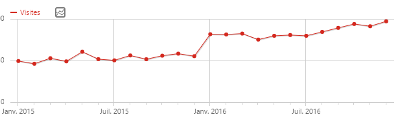

Éditos 2017
Édito du 04/12/2017
 Ils reparlent de nous !
Ils reparlent de nous !
Le Fix, la newsletter du magazine Di6dent, parle encore de nous, dans sa rubrique "C’est Lundi, c’est… gratuit !" cette fois-ci. Ce n'est pas la première fois depuis que je parlais d'eux dans un édito de 2015, et comme toujours ils sont gentils tout plein avec nous, alors rendons-leur la pareille en vous invitant à visiter leur page pour vous tenir au courant des dernières news concernant la culture rôliste.
Sinon, ici, on continue à travailler sur les scénarios. « Pour un diamant » est terminé, je continue juste d'attendre le plan de Kosmic qui est malheureusement très occupé IRL, et deux autres sont déjà en préparation.
Et puis si tout va bien et que je prend bien des vacances pour Noël, il y a de grandes chances que le jeu en ligne « La Guerre de Guildes » sorte enfin sur Tapouweb.
Édito du 04/11/2017
Un bon mois d'octobre !
Octobre a été prolifique sur Tapouweb. Les scénarios D&D 5, tant annoncés depuis des mois, commencent enfin à sortir. Plus de 10 à ce jour. Et d'autres sont déjà en préparation. L'occasion de saluer ici l'incroyable qualité des cartes que kosmic réalise spécialement pour nous. D'ailleurs, si vous aimez ses cartes, jetez un œil à son Fantasy Cartography – Compendium Vol. 01.
Côté news, l'info la plus importante ce mois-ci est sans doute l'annonce par Black Book Éditions de la parution du Guide du Maître en VF pour le 10 novembre 2017. Avec cet ouvrage, les francophones ont enfin l'intégralité du triptyque traduit. Plus aucune excuse pour ne pas jouer à D&D 5 à partir de maintenant !
Édito du 02/10/2017
En vrac
Gobelin d'Or 2017. C'est donc Nate qui gagne cette édition 2017 du concours avec l'origine magique de la Sorcellerie des Glaces pour ensorceleur ! Bravo à lui et à tous ceux qui ont participé. Rendez-vous dans un an.
La Forge. Je suis tombé par hasard sur un billet du blog La Forge qui parle d'Tapouweb. Ça fait plaisir de lire des choses comme cela, parce qu'il est vrai qu'un site comme Tapouweb demande beaucoup d'investissement, et ne réussit que parce que toute une communauté le supporte. Plus de 17 ans quand même, et comme indiqué sur l'article, que de péripéties !
Nouveau serveur. Depuis plusieurs mois, victime de son succès, Tapouweb était de temps en temps inaccessible, surtout le week-end, pour cause de surcharge sur le serveur (mutualisé). Hier 1er octobre j'ai donc décidé de faire un upgrade du plan de hosting, plus cher mais plus performant, en espérant ainsi mettre un terme à ces problèmes. On verra rapidement ce qu'il en est et si l'investissement était approprié.
Édito du 01/09/2017
Préparez-vous à voter
Il y a donc finalement 28 participations (+1 tardive) à cette troisième édition du concours du Gobelin d'Or, qui n'a d'autres buts que de fomenter la génération d'aides de jeu pour D&D 5. C'est un nombre très élevé qui me redonne espoir de faire perdurer ce concours dans les années qui viennent. Merci à tous les participants.
Et c'est donc 3 textes que vous devez choisir pour définir qui, après Lord Blackdeath en 2015 et Tirion en 2016, gagnera le Gobelin d'Or 2017.
Édito du 29/06/2017
Concours du Gobelin d'Or 2017
Donc, en fin de compte, il y aura bien un concours du Gobelin d'Or sur Tapouweb en 2017. Le thème de cette troisième édition sera dévoilé samedi 1 juillet, et la mécanique restera identique à celle des années précédentes.
Le règlement complet sera disponible sur le forum, mais d'ores et déjà sachez que vous aurez jusqu'au 31 août 2017 pour envoyer vos productions, lesquelles seront soumises aux votes des membres du forum jusqu'à fin Septembre, lorsque le grand gagnant sera annoncé. La production attendue ne devra contenir que du texte, aucun plan ou image, et sera limitée en nombre de caractères.
L'idée derrière tout cela est toujours la même : fomenter la génération d'aides de jeu originales qui peuvent servir à D&D 5.
Édito du 08/05/2017
Fin de la « glossairisation »
Suite à la sortie du Player's Handbook de D&D 5 en VF par BBE, nous avons fait une passe pour homogénéiser les termes techniques entre Tapouweb et la version de Blackbook. Toutefois, considérant que certaines traductions d'Tapouweb sont plus adéquates, ils subsistent encore certaines différences.
En premier lieu, nous avons donc mis en ligne un glossaire qui non seulement indique la correspondance entre les termes de la VO et les termes français sur Tapouweb, mais indique également, le cas échéant, la traduction utilisée par BBE. Ensuite, tout le site a été mis à jour pour être homogène à ce glossaire. Enfin, le PDF des Basic Rules et le supplément Races, Classes et Sorts ont également été mis à jour. Il ne devrait ainsi pas être compliqué de passer d'Tapouweb à la version de BBE et vice versa.
En ce qui concerne les PDF des monstres, ils ne seront pas mis à jour avant que ne sorte le Monster Manuel en VF, mais les fiches individuelles ont été actualisées, donc n'hésitez pas à utiliser la bibliothèque virtuelle (voir Vos livres DD5 en PDF ci-dessous) pour générer vos propres PDF et être ainsi à jour.
Bonne lecture !
Édito du 15/04/2017
Cap vers l'aventure
Voilà, ces deux jours de vacances m'ont permis de finaliser plusieurs petits projets qui traînaient depuis trop longtemps. Le guide des plantes est enfin en ligne, les 5 PDF de règles ainsi que la feuille de perso sont à jour, l'écran du MD a les ajouts que je souhaitais, le PDF des Unearthed Arcana est sorti, et j'ai même pu mettre en ligne le glossaire d'Tapouweb, ce qui n'était pas prévu initialement.
Donc, comme annoncé dans l'édito précédent, on va enfin pouvoir se consacrer aux aventures. Et vu que j'ai un stock un peu conséquent de scénarios pour D&D 3.5, j'espère pouvoir tenir un bon rythme et en sortir régulièrement. Mais il faut aussi que je termine la lecture de Ashes of the Tyrant...
Édito du 21/03/2017
Projets
Avec les deux dernières classes du PH intégrées au Character Builder et les 101 plantes sur le point d'être enfin terminées, on peut enfin penser à de nouveaux projets. Voici donc un point sur ce qui pourrait suivre sur Tapouweb.
En premier, je vais reprendre l'écran du MD pour y ajouter de nombreuses infos. L'idée est d'arriver sur 4 pages à faire un résumé le plus complet des règles car, ne jouant pas si souvent, lorsque cela m'arrive je regarde encore trop mon livre. Une nouvelle version des PDF devrait aussi voir le jour prochainement. Ce ne sera que des corrections mineures. De mémoire il ne me reste plus qu'à intégrer "Foncer" au lieu de "Courir". Et suite à cela, je pense reprendre les scénarios.
J'ai aussi toujours sous le coude de lancer la première Guerre des Guildes, mais mes occupations IRL ne me permettent pas de me lancer là dedans pour le moment. Ce projet reste donc en stand-by pour le moment, mais il n'est pas enterré.
Édito du 18/02/2017
Podcast Anonyme
Les trois compères de Podcast Anonyme, Franck, Laurent et Jean-Baptiste, lancent une petite série de trois vidéos sur D&D 5. La première présente le Starter Set et l'aventure Lost Mine of Phandelver. La deuxième s'attaque au triptyque de base des règles, et la dernière parle de tous les autres ouvrages de la gamme. Très sympa pour découvrir cette cinquième édition de Donjons & Dragons. Et ils parlent même gentiment de nous sur la fin de la première vidéo !
Bon visionnage !
Édito du 15/01/2017
Mise à jour du forum
Le forum phpBB d'Tapouweb passe de la branche 3.1.x à 3.2.0 aujourd'hui. Le changement est majeur et va surement engendrer quelques problèmes, principalement au niveau des balises spéciales, durant quelques temps.
Il y a également un changement important au niveau du style du forum. J'ai fait une petite modification afin d'éviter que le problème que j'ai eu/vu sur le forum de CasusNo ne se produise pas sur Tapouweb. Toutefois, si l'affichage du forum est bizarre pour vous, en particulier si vous voyez plein d'icônes qui se répètent, il faut faire CTRL+bouton refresh de votre navigateur, ou CTRL+F5. Un simple refresh ne fonctionnera pas.
Édito du 01/01/2017
Bilan 2016
En ce qui concerne le site, l'année 2016 aura été marquée par la sortie du SRD de D&D 5 au mois de janvier. Les deux projets lancés alors par Black Book Éditions et Agate ont indéniablement attiré de nombreux joueurs à se pencher sur D&D 5, et cela a bénéficié à Tapouweb. La courbe des visites ci-dessous fait clairement apparaître le sursaut de fréquentation à ce moment là, fréquentation qui n'est ensuite pas retombée, bien au contraire. On termine d'ailleurs l'année sur un nouveau record de visites, alors que le mois de décembre est traditionnellement plus faible que la moyenne. En un an, le nombre de visites a même carrément doublé !
Merci également au site ADnDdownloads de nous avoir référencé. Mois après mois c'est de loin le lien qui apporte le plus de visiteurs à Tapouweb, et en particulier de nombreuses personnes des USA qui viennent utiliser le Character Builder d'Tapouweb. Ceux-ci représentent en fait depuis quelques mois entre 10 et 11% de la fréquentation globale du site, chose rare je pense pour un site francophone.
J'espère que 2017 continuera sur cette lancée. Bonne année à tous !!!
